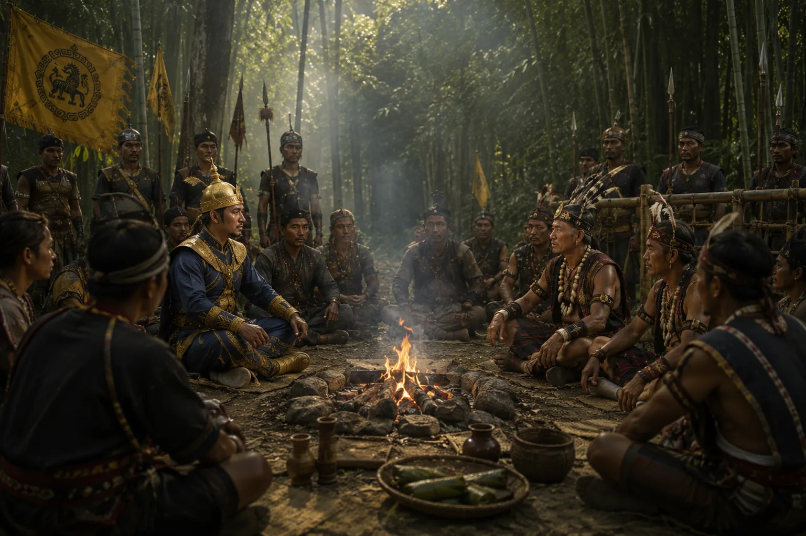

Negotiation and Settlement with Naga Chiefs
1228–1230 · The coming of Sukaphaa

Descending into Namrup, Sukaphaa establishes firm frontier peace through tactical deterrence and diplomatic accords with eastern Naga chieftains.
Sources have not yet been catalogued for this record.
People: Chaolung Sukaphaa
Open this scene in the interactive archive · Follow this event on MAP